Nhận diện thao tác, đầu ra và ràng buộc

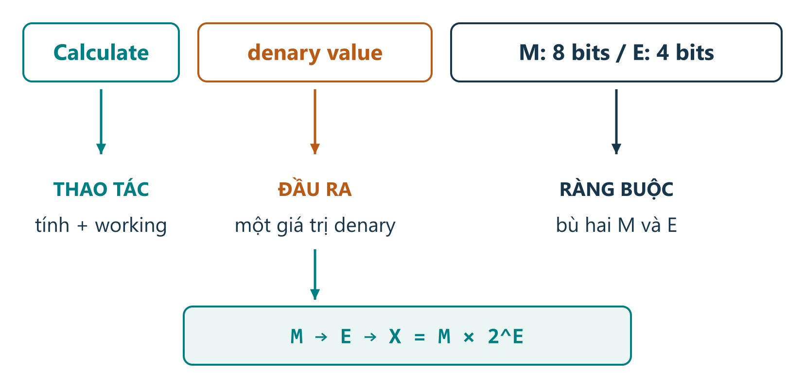
Tách Calculate / denary value / M8-E4 và nối tới thứ tự giải mã.
PNG 2×SVG chỉnh sửaĐọc dạng bài

Đề / MS của dạng liên quan
Sơ đồ phương pháp chung; xem các dạng E/X trong mục 13.4.
26 hình độc lập cho thao tác giải bài. PNG nền trong suốt để chèn vào tài liệu; SVG để chỉnh sửa. Nhấn vào hình để mở kích thước đầy đủ.

Tách Calculate / denary value / M8-E4 và nối tới thứ tự giải mã.
PNG 2×SVG chỉnh sửaĐọc dạng bài
Sơ đồ phương pháp chung; xem các dạng E/X trong mục 13.4.
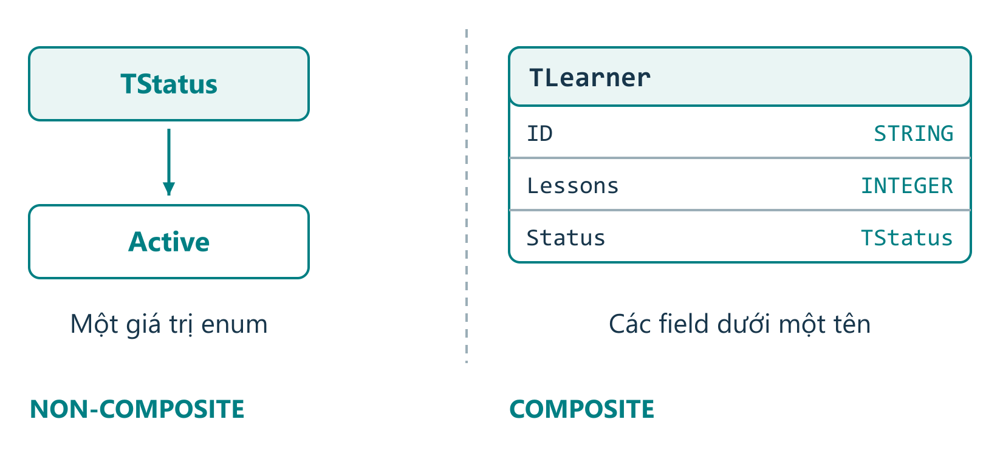
Đối chiếu biến enum với record chứa các field dưới một tên.
PNG 2×SVG chỉnh sửaĐọc dạng bài
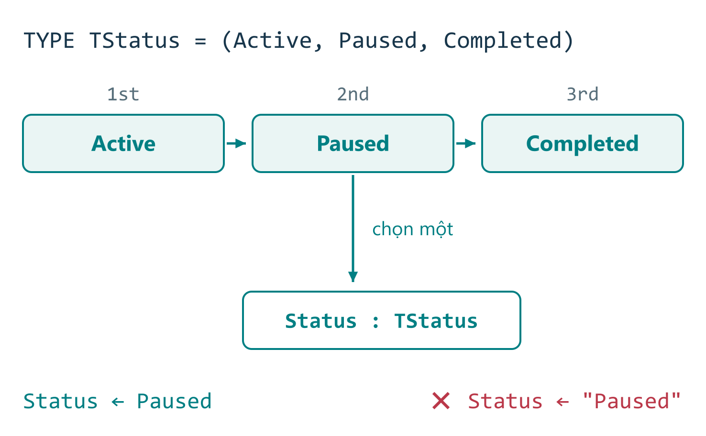
Ba giá trị enum trên một dãy; chọn Paused, phân biệt Paused với chuỗi "Paused".
PNG 2×SVG chỉnh sửaĐọc dạng bài
9618_s25_qp_31 · tr. 2 · 9618_s25_ms_31 · tr. 6 · 9618_w25_qp_33 · tr. 2 · 9618_w25_ms_33 · tr. 6
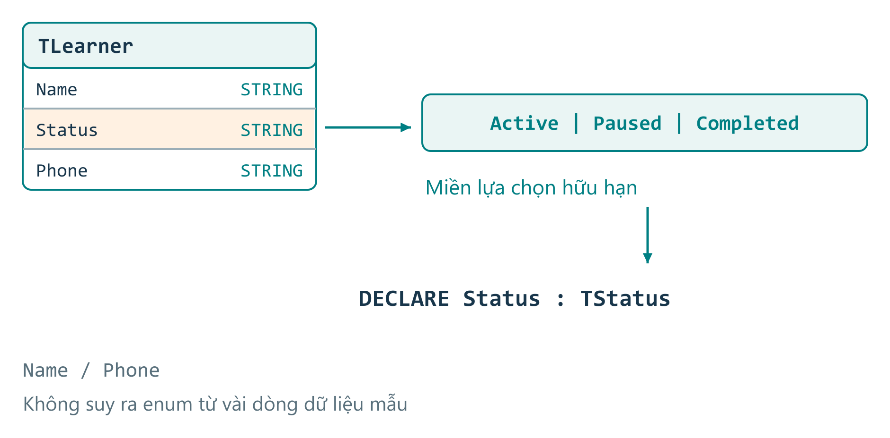
Field Status được đối chiếu với miền lựa chọn hữu hạn rồi đổi sang TStatus.
PNG 2×SVG chỉnh sửaĐọc dạng bài
9618_s25_qp_33 · tr. 2 · 9618_s25_ms_33 · tr. 6 · 9618_s25_qp_32 · tr. 2 · 9618_s25_ms_32 · tr. 4
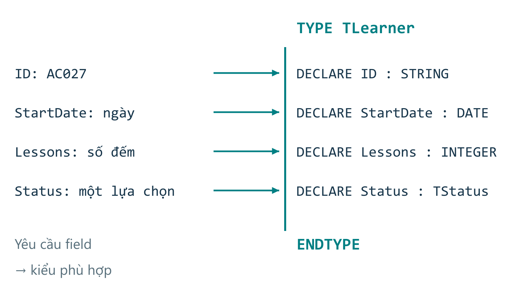
Bốn field nối tới bốn khai báo kiểu bên trong TYPE/ENDTYPE.
PNG 2×SVG chỉnh sửaĐọc dạng bài
9618_s25_qp_31 · tr. 2 · 9618_s25_ms_31 · tr. 6 · 9618_w24_qp_32 · tr. 3 · 9618_w24_ms_32 · tr. 5
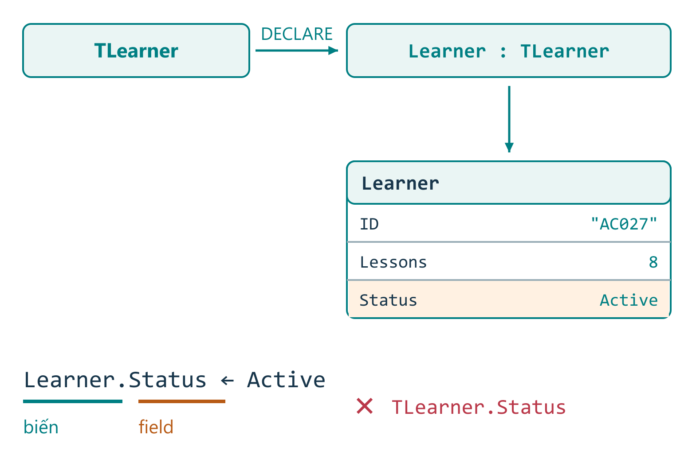
TLearner tạo biến Learner; Learner.Status là field nhận giá trị.
PNG 2×SVG chỉnh sửaĐọc dạng bài
9618_s25_qp_32 · tr. 2 · 9618_s25_ms_32 · tr. 4 · 9618_w22_qp_32 · tr. 4 · 9618_w22_ms_32 · tr. 6
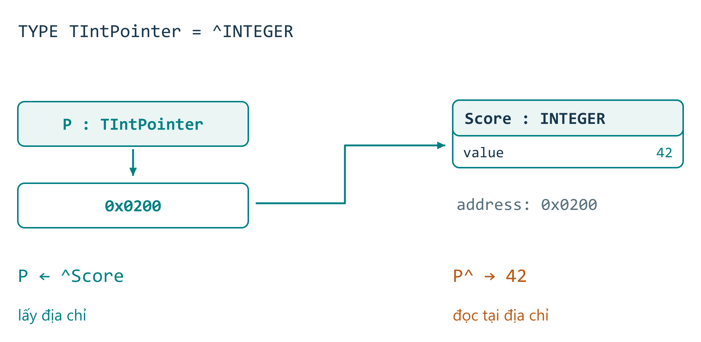
P lưu địa chỉ Score; ^Score lấy địa chỉ, P^ đọc giá trị 42.
PNG 2×SVG chỉnh sửaĐọc dạng bài
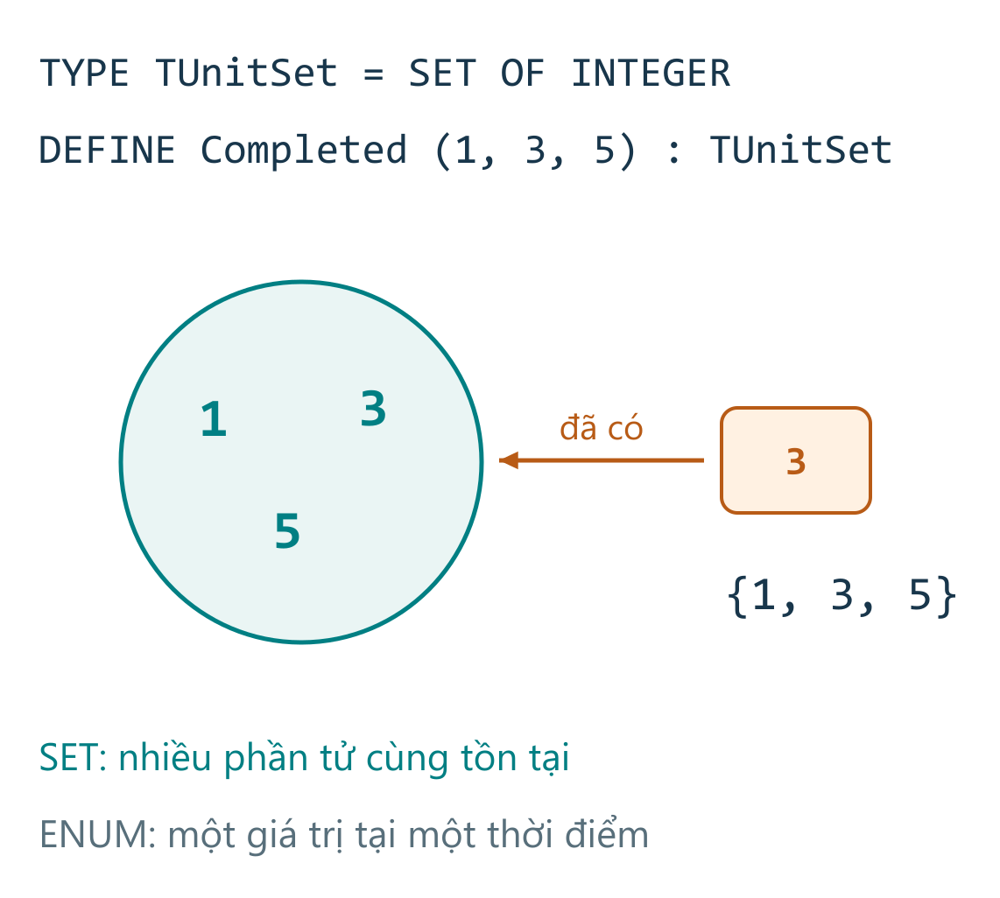
Thêm 3 vào tập {1,3,5} không tăng số phần tử; nối với TYPE và DEFINE.
PNG 2×SVG chỉnh sửaĐọc dạng bài
9618_s24_qp_32 · tr. 4 · 9618_s24_ms_32 · tr. 5 · 9618_w24_qp_31 · tr. 5 · 9618_w24_ms_31 · tr. 7
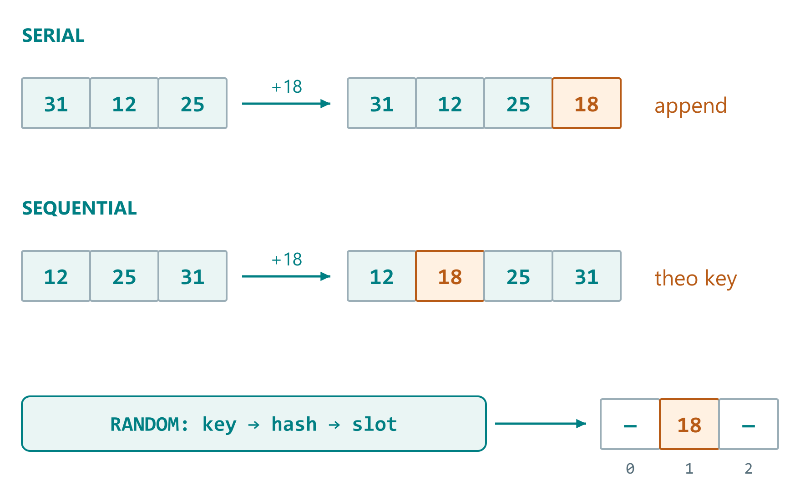
Key 18 được append, chèn theo thứ tự hoặc đặt vào slot từ hash.
PNG 2×SVG chỉnh sửaĐọc dạng bài
9618_w21_qp_31 · tr. 6 · 9618_w21_ms_31 · tr. 5 · 9618_w24_qp_32 · tr. 2 · 9618_w24_ms_32 · tr. 5
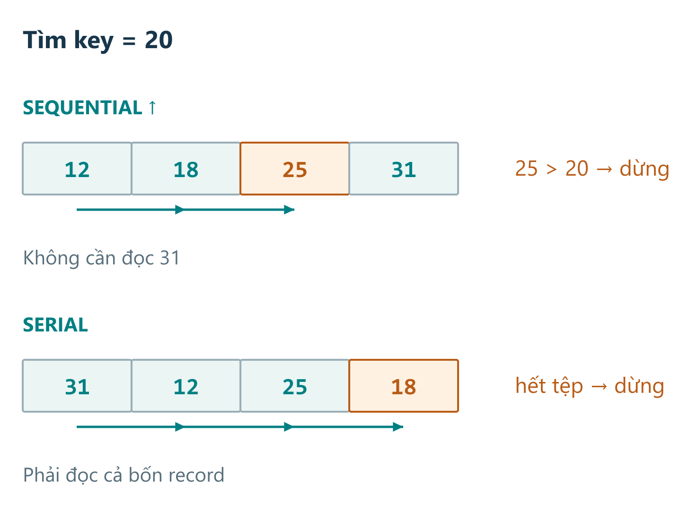
Tìm 20 trong sequential tăng dần dừng ở 25; serial phải tới cuối.
PNG 2×SVG chỉnh sửaĐọc dạng bài
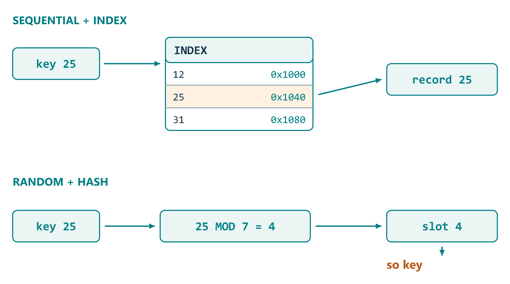
Sequential có index tra key–địa chỉ; random tính hash rồi so key.
PNG 2×SVG chỉnh sửaĐọc dạng bài
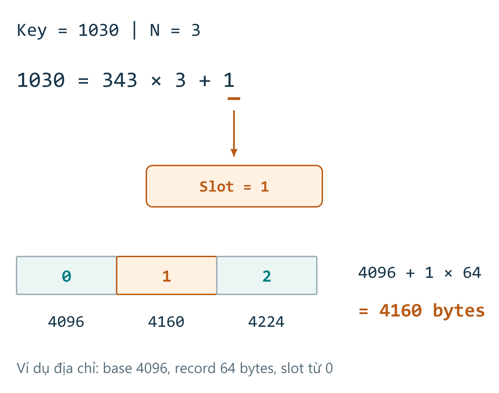
1030 MOD 3 = 1; slot 1 tại base 4096 + 64 = 4160 bytes trong ví dụ riêng.
PNG 2×SVG chỉnh sửaĐọc dạng bài
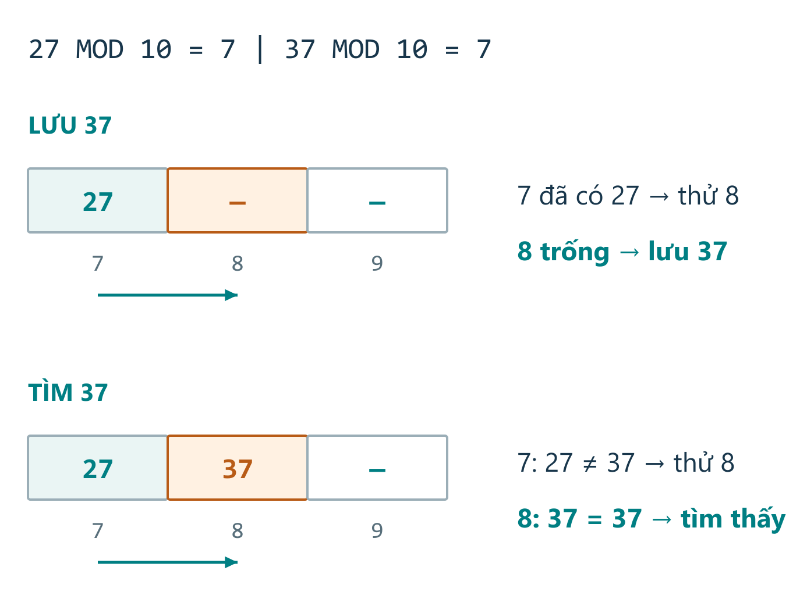
27 và 37 hash vào 7; lưu 37 tại 8, tìm phải so key tại 7 rồi 8.
PNG 2×SVG chỉnh sửaĐọc dạng bài
9618_s23_qp_31 · tr. 4 · 9618_s23_ms_31 · tr. 4 · 9618_w23_qp_32 · tr. 3 · 9618_w23_ms_32 · tr. 3
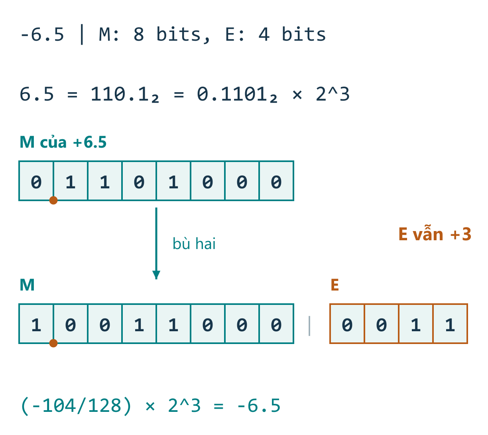
Đổi 6.5 sang binary, bù hai mantissa để mã hóa -6.5; exponent vẫn +3.
PNG 2×SVG chỉnh sửaĐọc dạng bài
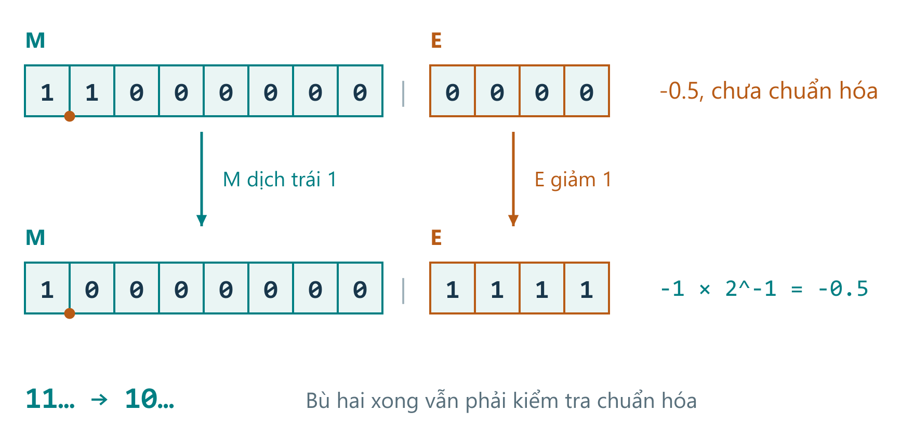
11000000/0000 và 10000000/1111 bằng nhau; chỉ cặp thứ hai chuẩn hóa.
PNG 2×SVG chỉnh sửaĐọc dạng bài
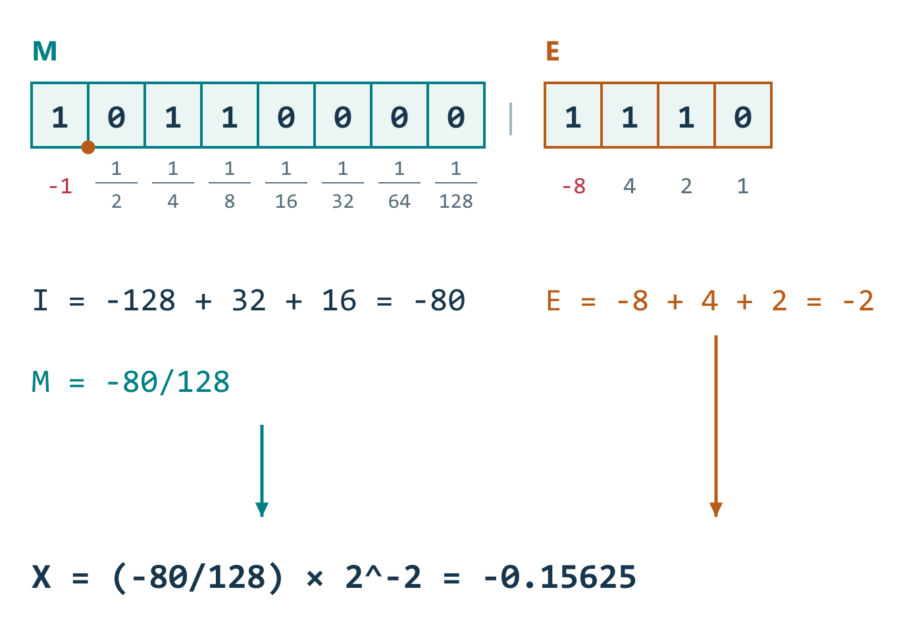
10110000/1110 cho I=-80 và E=-2; kết quả -0.15625.
PNG 2×SVG chỉnh sửaĐọc dạng bài
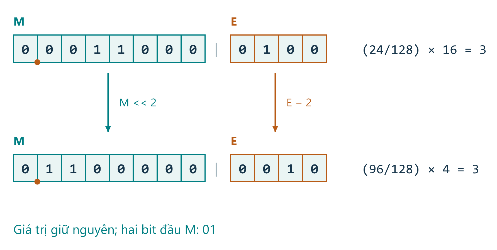
00011000/0100 dịch mantissa trái 2 và giảm exponent 2 thành 01100000/0010.
PNG 2×SVG chỉnh sửaĐọc dạng bài
9618_s25_qp_31 · tr. 3 · 9618_s25_ms_31 · tr. 7 · 9618_w21_qp_31 · tr. 2 · 9618_w21_ms_31 · tr. 3
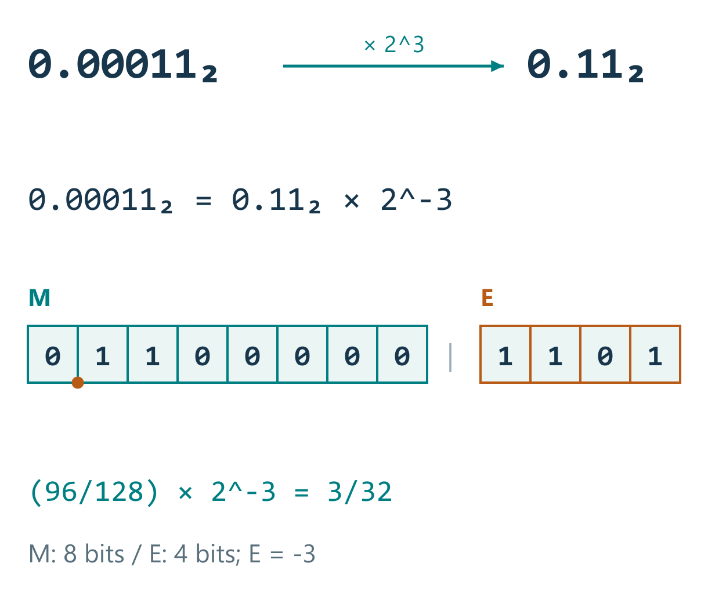
0.00011₂ = 0.11₂ × 2^-3; không đảo nhầm dấu exponent.
PNG 2×SVG chỉnh sửaĐọc dạng bài
9618_s25_qp_31 · tr. 3 · 9618_s25_ms_31 · tr. 7 · 9618_w21_qp_31 · tr. 2 · 9618_w21_ms_31 · tr. 3
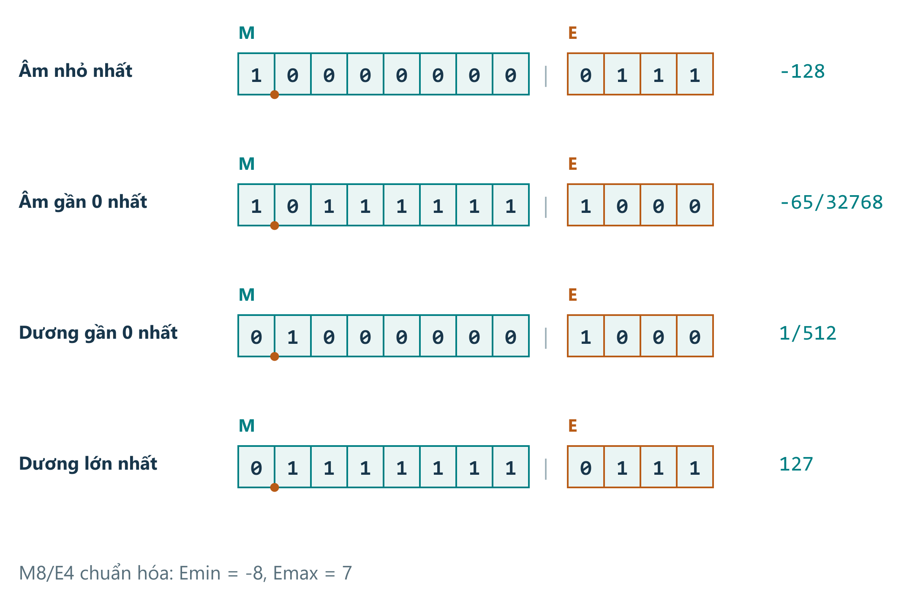
Bốn cặp M8/E4 chuẩn hóa và giá trị; phân biệt âm nhỏ nhất với âm gần 0.
PNG 2×SVG chỉnh sửaĐọc dạng bài
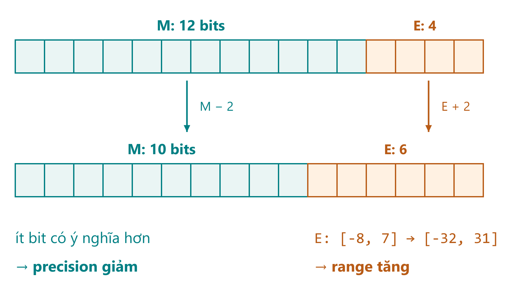
M12/E4 thành M10/E6; giảm precision nhưng mở rộng miền exponent.
PNG 2×SVG chỉnh sửaĐọc dạng bài
9618_w25_qp_33 · tr. 3 · 9618_w25_ms_33 · tr. 7 · 9618_s23_qp_31 · tr. 2 · 9618_s23_ms_31 · tr. 3
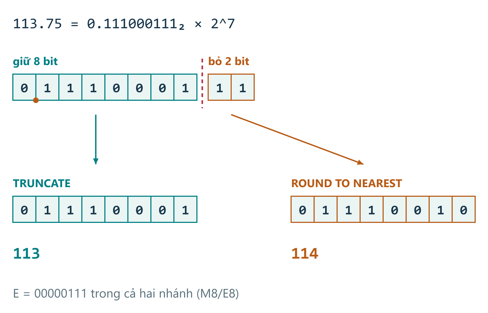
113.75 có phần mantissa dư 11; M8 giữ 113 khi cắt, 114 khi làm tròn gần nhất.
PNG 2×SVG chỉnh sửaĐọc dạng bài
9618_s23_qp_31 · tr. 2 · 9618_s23_ms_31 · tr. 3 · 9618_w24_qp_31 · tr. 2 · 9618_w24_ms_31 · tr. 4
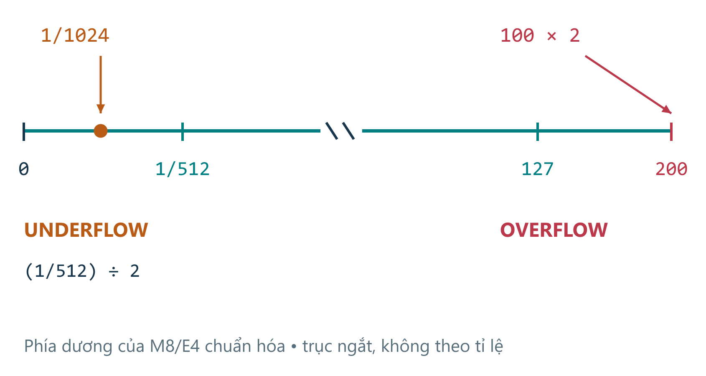
Biên dương M8/E4: 1/512 và 127; 1/1024 quá gần 0, 200 quá lớn.
PNG 2×SVG chỉnh sửaĐọc dạng bài
9618_w25_qp_33 · tr. 3 · 9618_w25_ms_33 · tr. 7 · 9618_w22_qp_32 · tr. 2 · 9618_w22_ms_32 · tr. 4
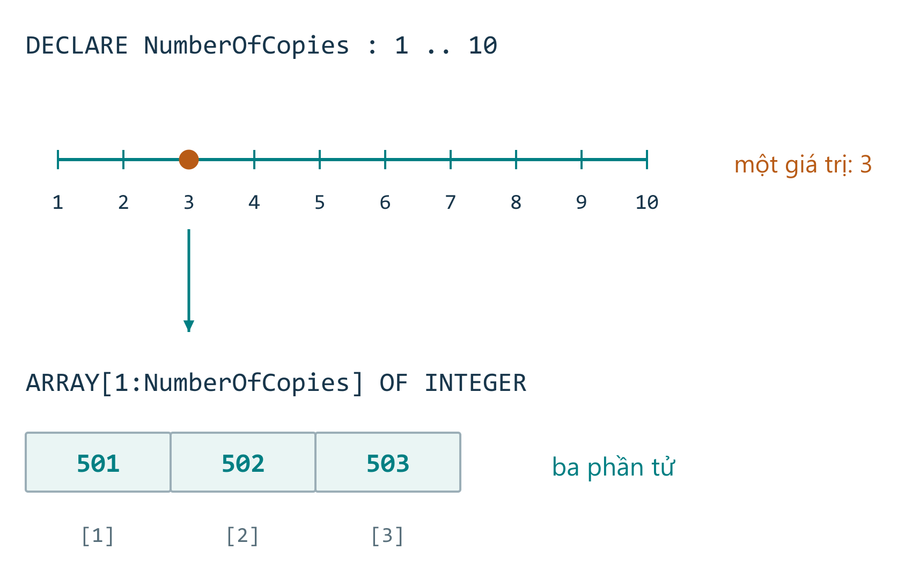
Một số bản sao trong 1..10 quyết định số phần tử của array mã con.
PNG 2×SVG chỉnh sửaĐọc dạng bài
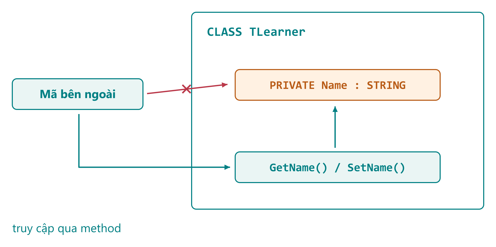
Mã ngoài không truy cập trực tiếp Name; dùng GetName/SetName trong class.
PNG 2×SVG chỉnh sửaĐọc dạng bài
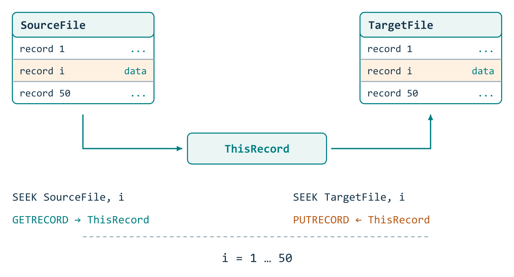
SourceFile → GETRECORD → ThisRecord → PUTRECORD → TargetFile; SEEK trên đúng file.
PNG 2×SVG chỉnh sửaĐọc dạng bài
9618_s25_qp_32 · tr. 13 · 9618_s25_ms_32 · tr. 12 · 9618_s25_qp_33 · tr. 13 · 9618_s25_ms_33 · tr. 14 · 9618_s23_qp_32 · tr. 7 · 9618_s23_ms_32 · tr. 7
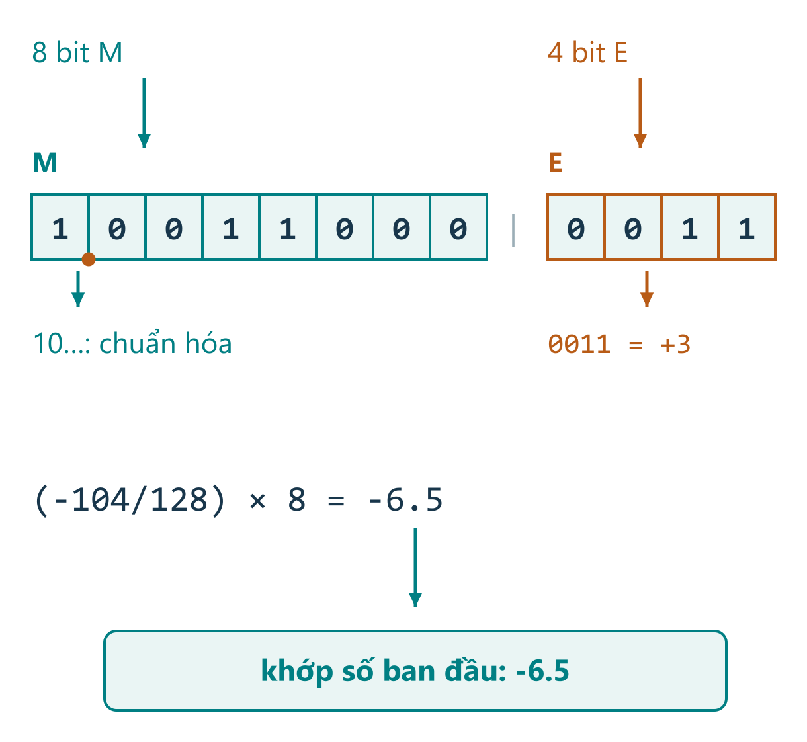
Kiểm tra 8/4 bit, chuẩn hóa 10, exponent +3, rồi đọc ngược ra -6.5.
PNG 2×SVG chỉnh sửaĐọc dạng bài
Sơ đồ phương pháp chung; xem các dạng E/X trong mục 13.4.